4 Forecast by OpenWeather
convert_timestamp = function(timestamp) {
return( as.POSIXct( timestamp ,tz = "Europe/Copenhagen",origin="1970-01-01") )
}convert_dataframe_timestamps = function(df) {
df$dt = convert_timestamp(df$dt)
df$sunrise = convert_timestamp(df$sunrise)
df$sunset = convert_timestamp(df$sunset)
df$moonrise = convert_timestamp(df$moonrise)
df$moonset = convert_timestamp(df$moonset)
return( df )
}wind_angle_to_compass = function(angle) {
val = (angle + 11.25)/22.5
arr = c("N", "NNE", "NE", "ENE", "E", "ESE", "SE", "SSE", "S", "SSW", "SW", "WSW", "W", "WNW", "NW", "NNW")
return( arr[(val %% 16)] )
}lat = 56.1572
lon = 10.2107
res = GET(paste0("https://api.openweathermap.org/data/2.5/onecall?lat=",lat,"&lon=",lon,"&appid=",env_apikey)) # Yeah, should really hide that api key.
res_json = jsonlite::fromJSON( rawToChar( res$content ) )
res_json_current = res_json$current
res_json_daily = res_json$daily
res_json_hourly = res_json$hourly
res_json_minutely = res_json$minutely
res_json_daily = convert_dataframe_timestamps(res_json_daily)
res_json_current = convert_dataframe_timestamps(res_json_current)
res_json_hourly$dt = convert_timestamp(res_json_hourly$dt)
res_json_minutely$dt = convert_timestamp(res_json_minutely$dt)
res_json_current$temp = convert_kelvin( res_json_current$temp )
res_json_current$feels_like = convert_kelvin( res_json_current$feels_like )
res_json_current$dew_point = convert_kelvin( res_json_current$dew_point )
res_json_hourly$temp = convert_kelvin( res_json_hourly$temp )
res_json_hourly$feels_like = convert_kelvin( res_json_hourly$feels_like )
res_json_hourly$dew_point = convert_kelvin( res_json_hourly$dew_point )4.1 Current Weather
So you don’t need to look out the window. :-)
- Time:
2021-05-17 13:53:55 - Weather Description:
light rain - Temperature (C):
13.94 - Feels Like (C):
13.4 - Pressure (hPa):
1001 - Humidity:
77 - Dew Point:
9.98 - UVI Index:
3.82 - Clouds:
75 - Visibility:
10000 - Wind Speed:
4.12 - Wind Degree:
190 - Wind Direction:
SSE
4.2 Minutely Precipitation
ggplot(res_json_minutely,aes(x=dt,y=precipitation)) +
geom_line() +
scale_y_continuous(expand=c(0,0),limits=c(0,NA)) +
theme_bw() +
labs(y="Estimated precipitation (mm)",x="Time")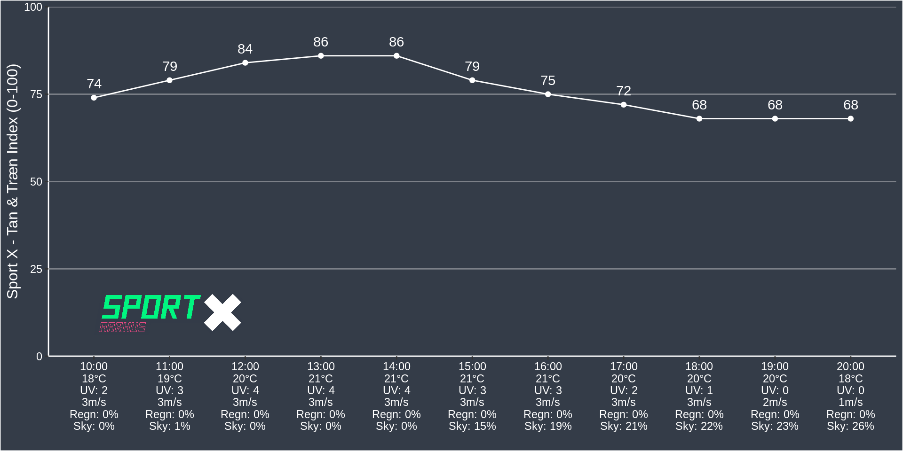
4.3 Hourly Forecast
4.3.1 Temperature
ggplot(res_json_hourly,aes(x=dt,y=temp)) +
geom_line() +
scale_y_continuous(expand=c(0,0),limits=c(-5,30),breaks = seq(-5,30,by=2.5)) +
scale_x_datetime(date_labels = "%h:%m") +
theme_bw() +
labs(y="Estimated Temperature (C)",x="Time",title="Temperature (C)") +
annotate("rect",ymin = -5,ymax = 0,fill="blue",xmin = min(res_json_hourly$dt),xmax = max(res_json_hourly$dt),alpha=0.3) +
annotate("rect",ymin = 0,ymax = 5,fill="lightsteelblue",xmin = min(res_json_hourly$dt),xmax = max(res_json_hourly$dt),alpha=0.3) +
annotate("rect",ymin = 5,ymax = 10,fill="green",xmin = min(res_json_hourly$dt),xmax = max(res_json_hourly$dt),alpha=0.3) +
annotate("rect",ymin = 10,ymax = 15,fill="yellow",xmin = min(res_json_hourly$dt),xmax = max(res_json_hourly$dt),alpha=0.3) +
annotate("rect",ymin = 15,ymax = 20,fill="orange",xmin = min(res_json_hourly$dt),xmax = max(res_json_hourly$dt),alpha=0.3) +
annotate("rect",ymin = 20,ymax = 30,fill="red",xmin = min(res_json_hourly$dt),xmax = max(res_json_hourly$dt),alpha=0.3)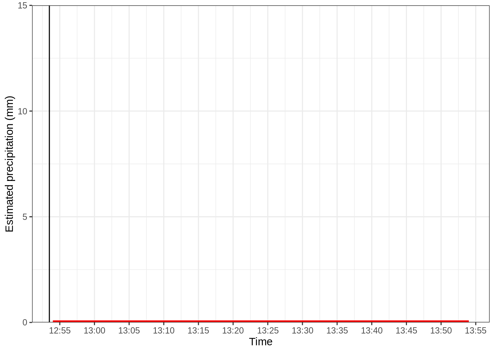
4.3.2 Pressure
ggplot(res_json_hourly,aes(x=dt,y=pressure)) +
geom_hline(yintercept = 1013,color="black") +
geom_line() +
scale_y_continuous(expand=c(0,0),limits=c(1013-40,1013+40)) +
theme_bw() +
labs(y="Estimated Pressure (hPa)",x="Time",title="Pressure")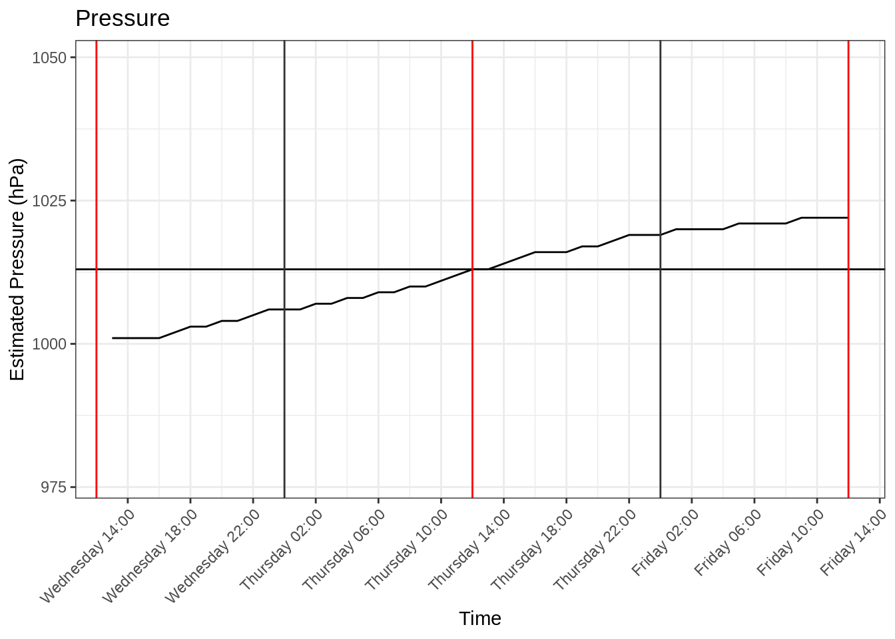
4.3.3 Humidity
ggplot(res_json_hourly,aes(x=dt,y=humidity)) +
geom_line() +
scale_y_continuous(expand=c(0,0),limits=c(0,NA)) +
theme_bw() +
labs(y="Estimated Humidity ()",x="Time",title="Humidity ()")
4.3.4 UVI Index
ggplot(res_json_hourly,aes(x=dt,y=uvi)) +
geom_line() +
scale_y_continuous(expand=c(0,0),limits=c(0,NA)) +
theme_bw() +
labs(y="Estimated UV Index ()",x="Time",title="UV Index") +
annotate("rect",ymin = 0,ymax = 2,fill="green",xmin = min(res_json_hourly$dt),xmax = max(res_json_hourly$dt),alpha=0.3) +
annotate("rect",ymin = 2,ymax = 6,fill="yellow",xmin = min(res_json_hourly$dt),xmax = max(res_json_hourly$dt),alpha=0.3) +
annotate("rect",ymin = 6,ymax = 8,fill="orange",xmin = min(res_json_hourly$dt),xmax = max(res_json_hourly$dt),alpha=0.3) +
annotate("rect",ymin = 8,ymax = 10,fill="red",xmin = min(res_json_hourly$dt),xmax = max(res_json_hourly$dt),alpha=0.3) +
geom_vline(xintercept = Sys.time()) 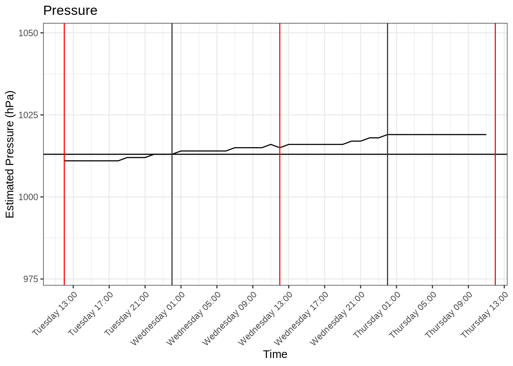
4.3.5 Cloud Coverage
ggplot(res_json_hourly,aes(x=dt,y=clouds)) +
geom_line() +
scale_y_continuous(expand=c(0,0),limits=c(0,NA)) +
theme_bw() +
labs(y="Estimated Clouds (C)",x="Time",title="Clouds (C)") +
scale_x_datetime(date_labels = "%A") +
geom_vline(xintercept = Sys.time()) 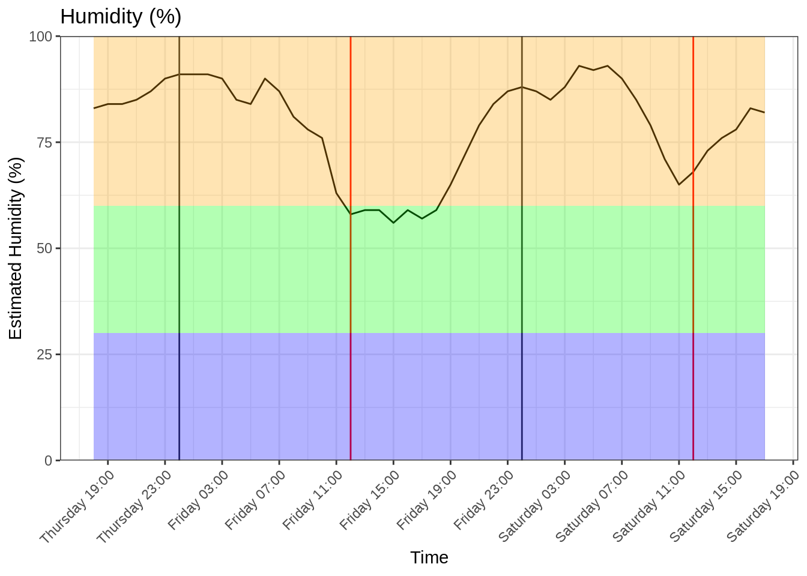
4.3.6 Wind Speed (Avg)
ggplot(res_json_hourly,aes(x=dt,y=wind_speed)) +
geom_line() +
scale_y_continuous(expand=c(0,0),limits=c(0,NA)) +
scale_x_datetime(date_labels = "%A") +
geom_vline(xintercept = Sys.time()) +
theme_bw() +
labs(y="Wind Speed",x="Time",title="Wind Speed") +
geom_line(data=res_json_hourly,aes(x=dt,y=wind_gust),color="red") +
annotate("rect",ymin = 0,ymax = 4,fill="green",xmin = min(res_json_hourly$dt),xmax = max(res_json_hourly$dt),alpha=0.3) +
annotate("rect",ymin = 4,ymax = 10,fill="yellow",xmin = min(res_json_hourly$dt),xmax = max(res_json_hourly$dt),alpha=0.3) +
annotate("rect",ymin = 10,ymax = 20,fill="orange",xmin = min(res_json_hourly$dt),xmax = max(res_json_hourly$dt),alpha=0.3)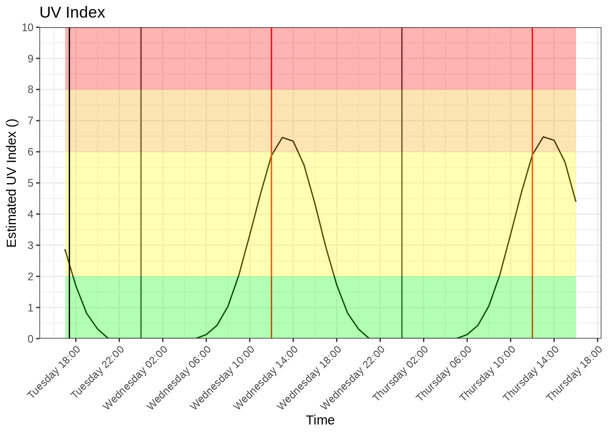
4.3.7 Wind Degree
ggplot(res_json_hourly,aes(x=dt,y=wind_deg)) +
geom_line() +
scale_y_continuous(expand=c(0,0),limits=c(0,NA)) +
geom_vline(xintercept = Sys.time()) +
theme_bw() +
labs(y="Wind Degree",x="Time",title="Wind Degree")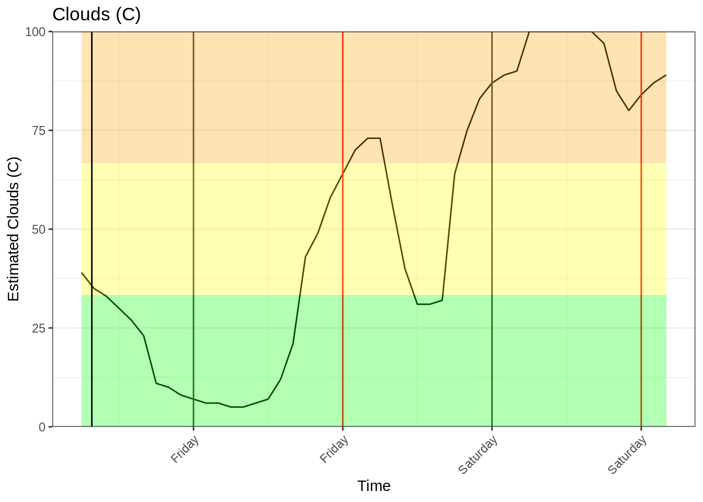
4.3.8 Probability of Precipitation
ggplot(res_json_hourly,aes(x=dt,y=pop)) +
geom_line() +
scale_y_continuous(expand=c(0,0),limits=c(0,1),labels=scales::percent) +
scale_x_datetime(date_labels = "%A %H:%m",date_breaks = "8 hours",date_minor_breaks = "1 hour") +
theme_bw() +
geom_vline(xintercept = Sys.time()) +
labs(y="Probability of Precipitation",x="Time",title="Probability of Precipitation")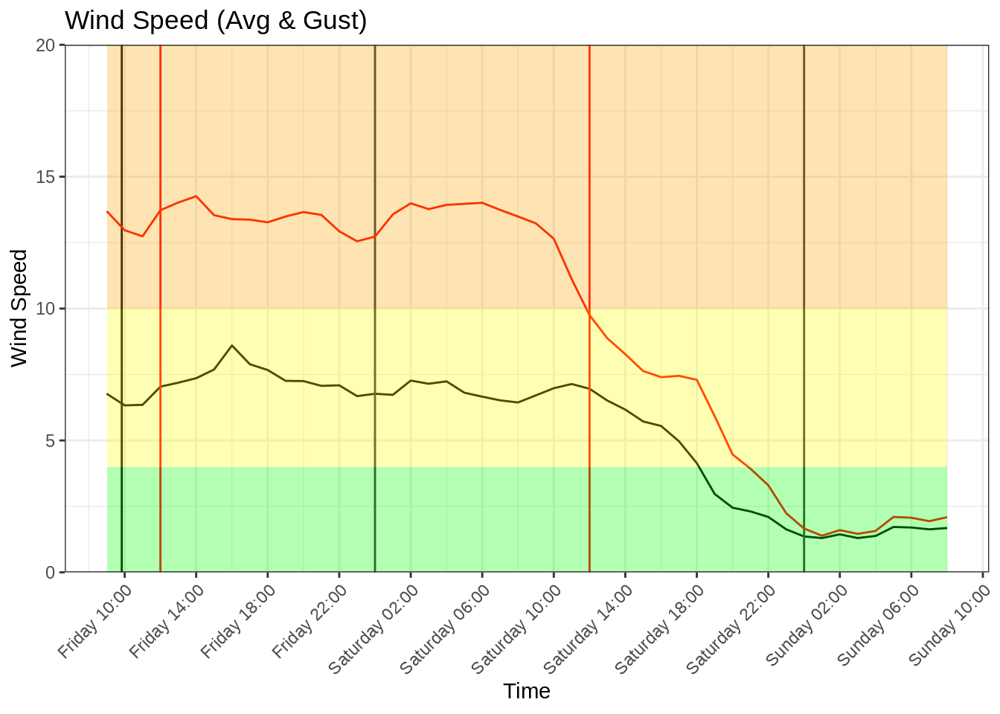
4.4 Daily Forecast
4.4.1 UV Index
ggplot(res_json_daily,aes(x=dt,y=uvi)) +
geom_line() +
scale_y_continuous(expand=c(0,0),limits=c(0,10)) +
annotate("rect",ymin = 0,ymax = 2,fill="green",xmin = min(res_json_daily$dt),xmax = max(res_json_daily$dt),alpha=0.3) +
annotate("rect",ymin = 2,ymax = 6,fill="yellow",xmin = min(res_json_daily$dt),xmax = max(res_json_daily$dt),alpha=0.3) +
annotate("rect",ymin = 6,ymax = 8,fill="orange",xmin = min(res_json_daily$dt),xmax = max(res_json_daily$dt),alpha=0.3) +
annotate("rect",ymin = 8,ymax = 10,fill="red",xmin = min(res_json_daily$dt),xmax = max(res_json_daily$dt),alpha=0.3) +
scale_x_datetime(date_labels = "%A",date_breaks = "1 day",date_minor_breaks = "4 hours") +
theme_bw() +
geom_vline(xintercept = Sys.time()) +
labs(y="UV Index",x="Time",title="UV Index")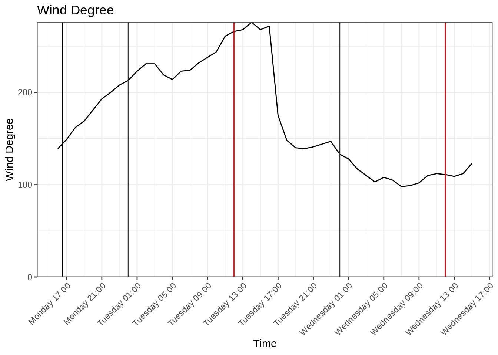
4.4.2 Rain
ggplot(res_json_daily,aes(x=dt,y=rain)) +
geom_line() +
geom_vline(xintercept = Sys.time()) +
scale_y_continuous(expand=c(0,0),limits=c(0,NA)) +
scale_x_datetime(date_labels = "%A",date_breaks = "1 day",date_minor_breaks = "4 hours") +
theme_bw() +
labs(y="Rain (mm)",x="Time",title="Rain (mm)")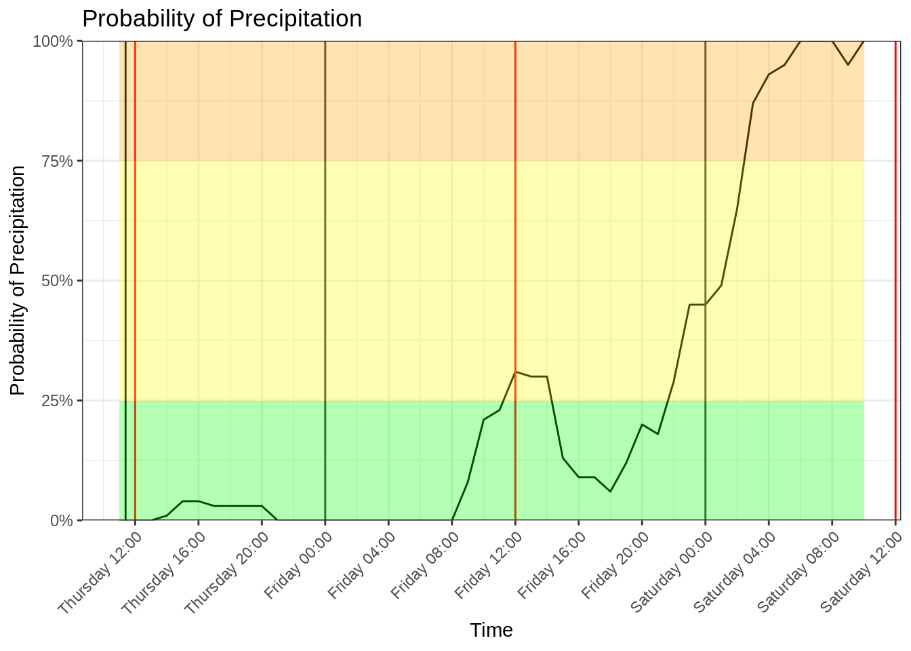
4.4.3 Probability of Precipitation
ggplot(res_json_daily,aes(x=dt,y=pop)) +
geom_line() +
geom_vline(xintercept = Sys.time()) +
scale_y_continuous(expand=c(0,0),limits=c(0,NA), labels = scales::percent) +
scale_x_datetime(date_labels = "%A",date_breaks = "1 day",date_minor_breaks = "4 hours") +
theme_bw() +
labs(y="Probability of Precipitation",x="Time",title="Probability of Precipitation")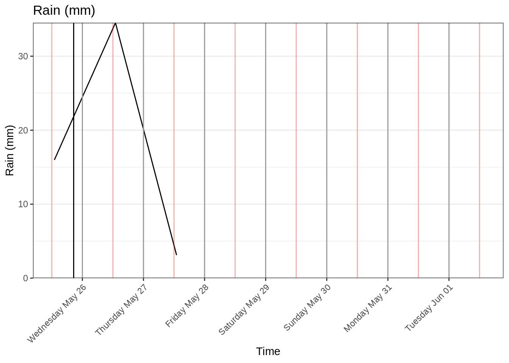
4.4.4 Clouds
ggplot(res_json_daily,aes(x=dt,y=clouds)) +
geom_line() +
geom_vline(xintercept = Sys.time()) +
scale_y_continuous(expand=c(0,0),limits=c(0,NA)) +
scale_x_datetime(date_labels = "%A",date_breaks = "1 day",date_minor_breaks = "4 hours") +
theme_bw() +
labs(y="Cloud Coverage",x="Time",title="Cloud Coverage")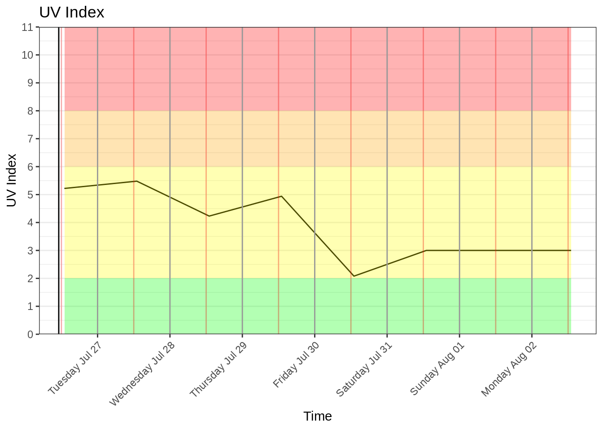
4.4.5 Wind Gusts
ggplot() +
geom_line(data = res_json_daily,aes(x=dt,y=wind_speed)) +
scale_y_continuous(expand=c(0,0),limits=c(0,NA)) +
scale_x_datetime(date_labels = "%A",date_breaks = "1 day",date_minor_breaks = "4 hours") +
theme_bw() +
geom_vline(xintercept = Sys.time()) +
geom_line(data=res_json_daily,aes(x=dt,y=wind_gust),color="red") +
labs(y="Wind",x="Time",title="Wind ")
4.4.6 Temperature
res_json_daily %>%
dplyr::select(dt) %>%
bind_cols(res_json_daily$temp) %>%
gather(temp,value,day:morn) %>%
dplyr::mutate(value=convert_kelvin(value)) %>%
ggplot(.,aes(x=dt,y=value)) +
geom_vline(xintercept = Sys.time()) +
geom_line(aes(color=temp)) +
scale_y_continuous(limits=c(0,25),expand=c(0,0)) +
scale_x_datetime(date_breaks = "1 day",date_minor_breaks = "4 hours",date_labels = "%A") +
theme_bw() +
theme(legend.position = "bottom") +
labs(x="Date",y="Temperature (C)")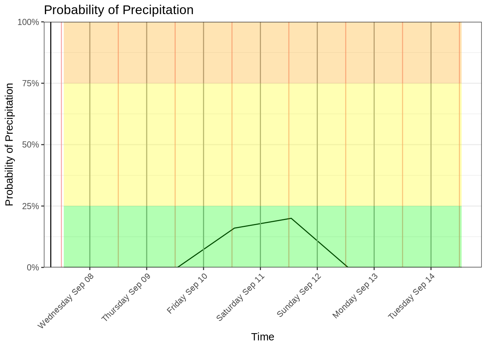